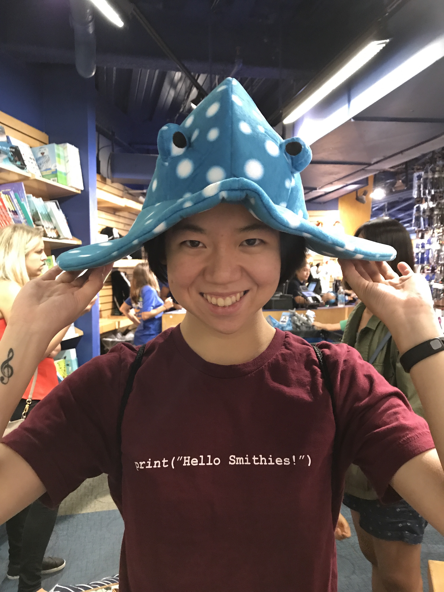

| Research | Teaching | Expository Writings | About Me |
|  |
Office: Address: Email: I am a fourth-year graduate student at Brown University under the supervision of Melody Chan. I did my undergraduate studies at Smith College. My research interests include algebraic geometry and combinatorics. |